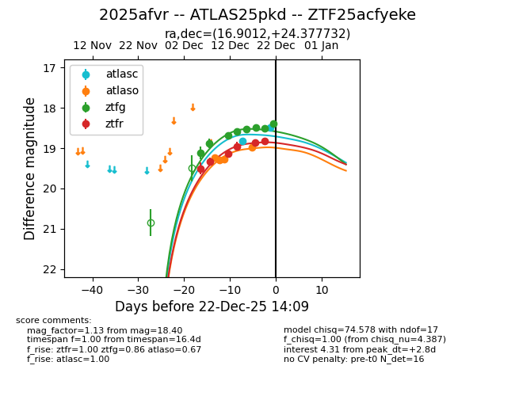
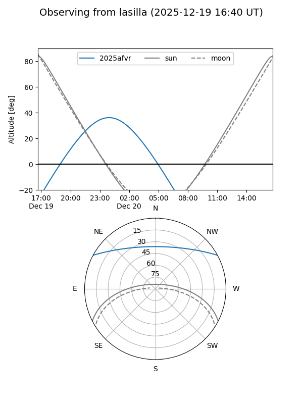
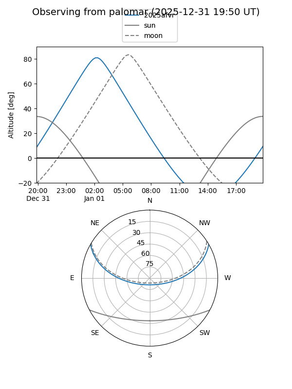
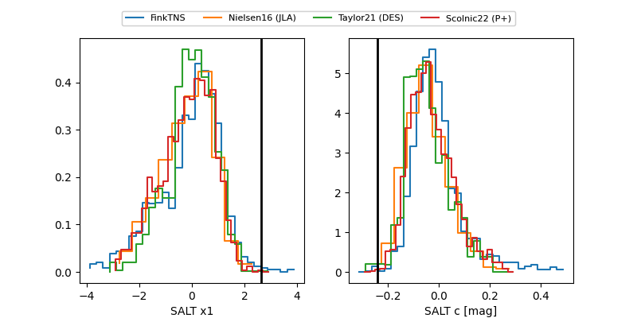

2025afvr
Target 2025afvr at 2025-12-18 10:45
Aliases and brokers:
FINK: fink-portal.org/ZTF25acfyeke
Lasair: lasair-ztf.lsst.ac.uk/objects/ZTF25acfyeke
ALeRCE: alerce.online/object/ZTF25acfyeke
TNS: wis-tns.org/object/2025afvr
YSE: ziggy.ucolick.org/yse/transient_detail/2025afvr
alt names
ZTF25acfyeke (ztf,fink_ztf)
2025afvr (tns,yse)
ATLAS25pkd (atlas)
Coordinates:
equatorial (ra, dec) = 16.9012,+24.37773
equatorial (HMS+DMS) = 01:07:36.29,+24:22:39.83
galactic (l, b) = (127.6273,-38.34658)
Photometry
last atlasc=18.66, atlaso=19.27, ztfg=18.52, ztfr=18.96
1 atlasc, 3 atlaso, 5 ztfg, 4 ztfr detections
Lightcurve

Visibility


Additional plots
